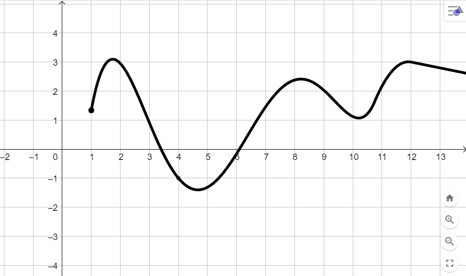

Nel paragrafo precedente è stata data la definizione di dominio di una funzione:
L'insieme di tutti i valori per i quali la funzione è definita si dice dominio della funzione
Nel paragrafo 1.3 abbiamo visto come rappresentare graficamente una funzione.
L'obiettivo di questo paragrafo è capire come dedurre il dominio di una funzione a partire dal suo grafico.
Dedurre il dominio a partire dal grafico
Supponiamo che la funzione \(f\) abbia il seguente grafico:

Possiamo osservare che tale grafico non si estende ovunque orizzontalmente: per così dire, comincia da un certo punto in poi.
Come possiamo interpretare questo fatto?
Trascinate il punto arancione che trovate sull'asse delle \(x\) del grafico interattivo qui sotto.
Che valore assume \(f\) se posizionate il punto in modo che la \(x\) sia un numero più piccolo di \(1\)?
Se la \(x\) assume valore minore di \(1\) la funzione non è definita.
se scegliamo \(x \geq 1\), la coordinata \(y\) del punto viola in cui la retta verticale interseca il grafico
ci dice il valore assunto da \(f\).
se prendiamo \(x \lt 1\) la retta verticale non interseca il grafico. Di conseguenza, la funzione
non assume alcun valore in tale punto, ovvero non è definita.
Da ciò concludiamo che il dominio di \(f\) è l'insieme dei valori \(x \geq 1\), per tutti gli altri valori la funzione non è definita.
Di seguito sono riportati altri esempi significativi.
Esempio
Consideriamo la funzione \(g\) avente il seguente grafico
Trascinando il punto arancione è possibile vedere i valori assunti da \(h\) al variare del valore di \(x\).
Provate prima a pensare: per quali valori di \(x\) la funzione è definita? Per quali no?
Se assegnamo ad \(x\) un valore minore o uguale di \(-3\) oppure maggiore o uguale di \(3\) la retta verticale
interseca il grafico di \(h\) nel punto viola.
Se invece scegliamo come valore di \(x\) un numero compreso tra \(-3\) e \(3\) non abbiamo alcuna
intersezione, ovvero la funzione non è definita.
Il dominio della funzione \(h\) è l'insieme dei valori \(x \leq -3\) oppure \(x \geq 3\)
Riassumendo:
Dato il grafico di una funzione,
i valori di \(x\) per i quali la retta verticale interseca il grafico sono quelli per cui la funzione
è definita e costituiscono il dominio della funzione.
i valori di \(x\) per i quali la retta non interseca il grafico sono quelli per cui la funzione
non è definita.
Esercizi
Domanda 1
Di seguito è riportato il grafico della funzione \(f\).
Selezionate tra le seguenti tutte le affermazioni corrette.
La funzione è definita per \(x = 0\)
La funzione è definita per \(x = -1\)
La funzione è non è definita per \(x = 1\)
La funzione è definita per \(x = 2\)
Il dominio della funzione è l'insieme dei valori
\[
x \leq 4 \,\,\,\text{e}\,\,\, x\neq-1 \,\,\,\text{e}\,\,\, x\neq 2
\]
La funzione non è definita per \(x = -1\), per \(x = 2\) e per \(x \gt 4\)
1/2 tentativi disponibili
Mostra la risposta
Soluzione:
Il grafico di \(f\) si "interrompe" in corrisponenza di \(x = -1\) e \(x = 2\). Infatti vediamo che
le corrispondenti rette verticali (quelle rosa ed arancione) non intersecano il grafico. Esso si avvicina sempre di più ad esse senza mai toccarle.
Questo indica che \(f\) non è definita per \(x = -1\) e \(x = 2\).
Allo stesso modo, il grafico "si interrompe" per \(x \gt 4\), ovvero in corrispondenza della zona evidenziata in
verde.
La retta verticale non interseca il grafico in corrispondenza di tali valori, indice del fatto che
la funzione non è definita per \(x \gt 4\).
Riassumedo,
La funzione non è definita per \(x = -1\), per \(x = 2\) e per \(x \gt 4\)
Specularmente, possiamo affermare che
L'insieme dei valori per cui è definita, ovvero il dominio della funzione è
\[
x \leq 4 \,\,\,\text{e}\,\,\, x\neq-1 \,\,\,\text{e}\,\,\, x\neq 2
\]
Domanda 2
Consideriamo la funzione \(p\) avente il seguente grafico
Selezionare tra le seguenti tutte le affermazioni corrette
La funzione è definita per ogni valore di \(x\)
La funzione non è definita per i valori
\[
-10 \leq x \leq 10
\]
Il dominio della funzione è l'insieme dei valori
\[
-10 \leq x \leq 10
\]
La funzione non è definita per i valori
\[
x \lt -10 \,\,\,\text{oppure}\,\,\, x \gt 10
\]
Il dominio della funzione è l'insieme dei valori
\[
x \lt -10 \,\,\,\text{oppure}\,\,\, x \gt 10
\]
Il dominio della funzione è l'insieme dei valori
\[
x \lt 10
\]
Il dominio della funzione è l'insieme dei valori
\[
x \gt -10
\]
1/2 tentativi disponibili
Mostra la risposta
Soluzione:
La retta verticale interseca il grafico solo se scegliamo valori di \(x\) compresi tra \(-10\) e \(10\).
Vedere per credere! (usate il seguente grafico interattivo).
Soluzione:
La funzione non è definita per \(\color{red}{}x = -1\) e per \(\color{rgb(238, 130, 238)}{}3 \lt x \lt 5 \).
Di conseguenz il suo grafico non deve attraversare la retta rossa
né la zona evidenziata in viola
Di seguito cinque esempi di grafici che soddisfano questa condizione
Primo esempio
Secondo esempio
Terzo esempio
Importante
In corrispondenza del valore \(x = 5\) il grafico presenta un pallino pieno. Con ciò si vuole indicare
che la funzione è definita per \(x =5\).
Viceversa, per \(x = -1\,\) e per \(\,x = 3\) il grafico della funzione presenta dei pallini vuoti. Con ciò si intende che
la funzione non è definita per \(x = -1\,\) e per \(\,x = 3\).
Quarto esempio
Quinto esempio
Provate a disegnarne alti cinque grafici aventi le stesse caratteristiche.

.png)